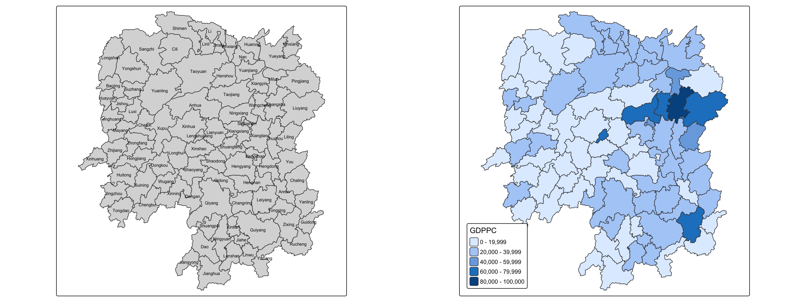
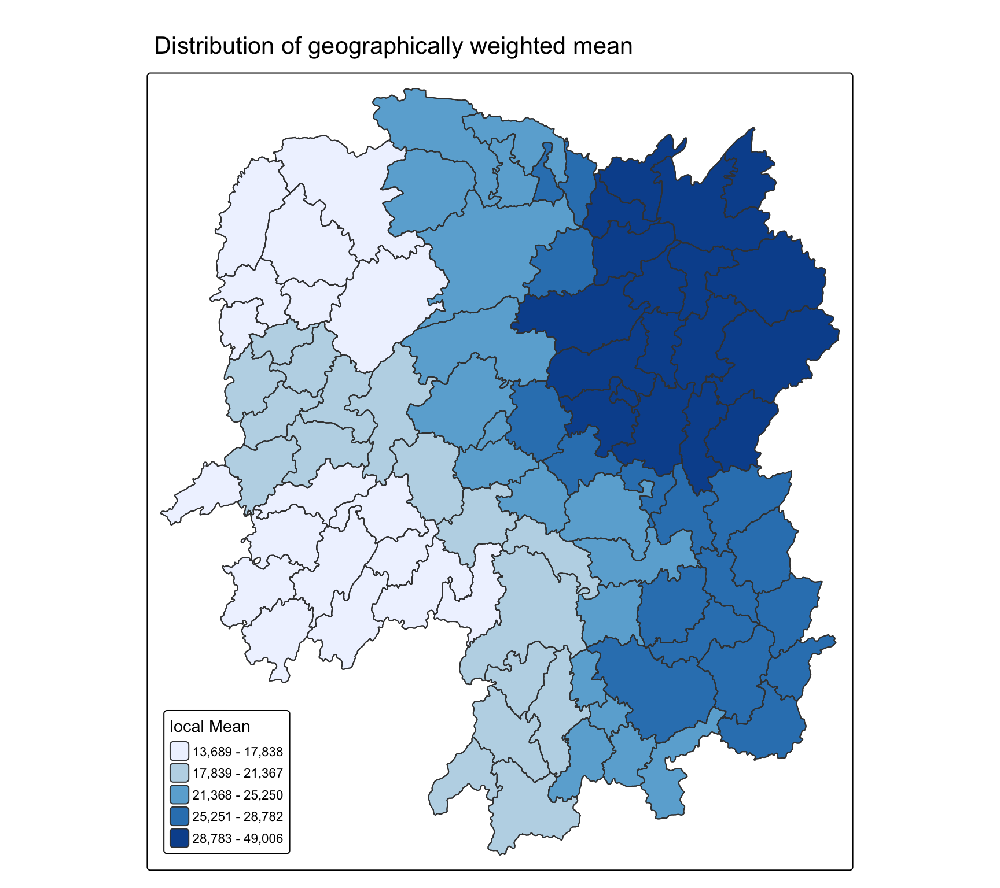

pacman::p_load(sf, ggstatsplot, spdep, tmap, tidyverse, knitr, GWmodel)In-class Exercise 4
Spatial Weights and Applications
1 Getting started
2 Getting the data into R environment
2.1 Import shapefile into R environment
hunan_sf <- st_read(dsn = "data/geospatial",
layer = "Hunan")Reading layer `Hunan' from data source
`/Users/AnLoc/Documents/GitHub/ISSS626-GAA/In-class_Ex/In-class_Ex04/data/geospatial'
using driver `ESRI Shapefile'
Simple feature collection with 88 features and 7 fields
Geometry type: POLYGON
Dimension: XY
Bounding box: xmin: 108.7831 ymin: 24.6342 xmax: 114.2544 ymax: 30.12812
Geodetic CRS: WGS 842.2 Import csv file into R environment
hunan2012 <- read_csv("data/aspatial/Hunan_2012.csv")
class(hunan2012)[1] "spec_tbl_df" "tbl_df" "tbl" "data.frame" match(c("GIO", "Agri", "Service"), names(hunan2012))[1] 10 25 262.3 Performing relational join
# By column name (kept for reference, same result as the version below)
# hunan_sf <- left_join(hunan_sf, hunan2012, by = "County") %>%
# select(NAME_2, ID_3, NAME_3, ENGTYPE_3, County, GDPPC, GIO, Agri, Service)
# By column position
hunan_sf <- left_join(hunan_sf, hunan2012, by = "County") %>%
select(1:4, 7, 15:16, 31:32)3 Visualising regional development indicator

4 Converting from sf to sp
GWmodel works on sp objects, so convert a copy.
hunan_sp <- hunan_sf %>%
as_Spatial()class(hunan_sp)[1] "SpatialPolygonsDataFrame"
attr(,"package")
[1] "sp"5 Determining adaptive bandwidth
5.1 Cross-validation
bw_CV <- bw.gwr(GDPPC ~ 1,
# ⚬ Usually, regression looks like GDPPC ~ Education + Investment
# ("predict GDP using education and investment").
# ⚬ Writing GDPPC ~ 1 strips out all explanatory variables.
# It tells R: "Don't try to explain GDP using other factors;
# just look at GDP itself."
# What is the optimal neighborhood size (bandwidth) to calculate the
# geographically weighted average of GDP per capita across Hunan without
# oversmoothing the map?
data = hunan_sp,
approach = "CV",
adaptive = TRUE,
kernel = "bisquare")Adaptive bandwidth: 62 CV score: 15520580761
Adaptive bandwidth: 46 CV score: 15049540200
Adaptive bandwidth: 36 CV score: 14570733153
Adaptive bandwidth: 29 CV score: 14367836879
Adaptive bandwidth: 26 CV score: 14204286818
Adaptive bandwidth: 22 CV score: 13860118620
Adaptive bandwidth: 22 CV score: 13860118620 #longlat = TRUE)
# Adaptive bandwidth: 62 CV score: 15515442343
# adaptive = TRUE, the bandwidth is measured in a count of spatial units rather
# than a physical distance (like kilometers)
# CV stands for Cross-Validation
# The algorithm temporarily removes one county at a time,
# predicts its GDP using the remaining neighbors, and tallies up the difference.
# Rule: You always want the lowest CV score, as a lower score indicates
# higher predictive accuracy.
# e.g. 22 means every computation needs 22 neighbors
# if using FALSE, the great circle distance will be in km, ~72km
# Sometimes it goes down to 52 and the algorihtm came back to higher value and slowly go down againbw_CV[1] 225.2 AIC
bw_AIC <- bw.gwr(GDPPC ~ 1,
data = hunan_sp,
approach = "AICc",
# AIC suitable for big data, less sensitive for small number of observations
# Our case area is small, so we use AICc, penalize small number size
# Avoid biasness for small locations, ~20 areas
adaptive = TRUE,
kernel = "bisquare",
longlat = TRUE)Adaptive bandwidth (number of nearest neighbours): 62 AICc value: 1923.156
Adaptive bandwidth (number of nearest neighbours): 46 AICc value: 1920.469
Adaptive bandwidth (number of nearest neighbours): 36 AICc value: 1917.324
Adaptive bandwidth (number of nearest neighbours): 29 AICc value: 1916.661
Adaptive bandwidth (number of nearest neighbours): 26 AICc value: 1914.897
Adaptive bandwidth (number of nearest neighbours): 22 AICc value: 1914.045
Adaptive bandwidth (number of nearest neighbours): 22 AICc value: 1914.045 bw_AIC[1] 226 Computing geographically weighted summary statistics
gwstat <- gwss(data = hunan_sp,
vars = "GDPPC",
bw = bw_AIC,
kernel = "bisquare", # need to be consistent
quantile = TRUE, # calculate both Parametric measures (Mean, Standard Deviation) - assume your data behaves like a normal bell curve, and Non-parametric measures (Median, IQR) - These make no assumptions about distribution shape
adaptive = TRUE,
longlat = T)names(gwstat$SDF)[1] "GDPPC_LM" "GDPPC_LSD" "GDPPC_LVar" "GDPPC_LSKe" "GDPPC_LCV"
[6] "GDPPC_Median" "GDPPC_IQR" "GDPPC_QI" 6.1 Preparing the output data
Extract the summary statistics into a plain data.frame.
gwstat_df <- as.data.frame(gwstat$SDF)Append the newly derived data.frame onto hunan_sf.
hunan_gstat <- cbind(hunan_sf, gwstat_df)cbind stands for “column-bind”:
hunan_sfis the original map table, containing county names and boundary shapes.gwstat_dfis the new table holding the calculated geographically weighted statistics, such asGDPPC_LMand the local standard deviations.cbind(hunan_sf, gwstat_df)stitches those newly calculated statistical columns directly onto the map polygons.
As we know the sequence is the same, because the sorting was never touched, we simply append directly with cbind. If we had done some sorting, the sequence would be incorrect. There is no unique identifier in gwstat_df to match on, so row order is the only thing keeping each county with its own statistics.
glimpse(hunan_gstat)Rows: 88
Columns: 18
$ NAME_2 <chr> "Changde", "Changde", "Changde", "Changde", "Changde", "C…
$ ID_3 <int> 21098, 21100, 21101, 21102, 21103, 21104, 21109, 21110, 2…
$ NAME_3 <chr> "Anxiang", "Hanshou", "Jinshi", "Li", "Linli", "Shimen", …
$ ENGTYPE_3 <chr> "County", "County", "County City", "County", "County", "C…
$ County <chr> "Anxiang", "Hanshou", "Jinshi", "Li", "Linli", "Shimen", …
$ GDPPC <dbl> 23667, 20981, 34592, 24473, 25554, 27137, 63118, 62202, 7…
$ GIO <dbl> 5108.9, 13491.0, 10935.0, 18402.0, 8214.0, 17795.0, 99254…
$ Agri <dbl> 4524.410, 6545.350, 2562.460, 7562.340, 3583.910, 5266.51…
$ Service <dbl> 14100.0, 17727.0, 7525.0, 53160.0, 7031.0, 6981.0, 26617.…
$ GDPPC_LM <dbl> 27085.04, 28227.25, 25962.57, 25161.45, 24790.65, 22612.9…
$ GDPPC_LSD <dbl> 7978.294, 12654.847, 6749.035, 5033.555, 5627.526, 6248.1…
$ GDPPC_LVar <dbl> 63653173, 160145149, 45549470, 25336676, 31669048, 390390…
$ GDPPC_LSKe <dbl> 3.1262272, 2.1705381, 2.6355263, 0.5834812, 1.4475922, -0…
$ GDPPC_LCV <dbl> 0.2945646, 0.4483202, 0.2599525, 0.2000503, 0.2270019, 0.…
$ GDPPC_Median <dbl> 25246, 22879, 24418, 24418, 24418, 22879, 37651, 27589, 3…
$ GDPPC_IQR <dbl> 7419, 8460, 6039, 6039, 6039, 6900, 34717, 36188, 35842, …
$ GDPPC_QI <dbl> -0.10931392, -0.53238771, 0.12502070, 0.12502070, 0.12502…
$ geometry <POLYGON [°]> POLYGON ((112.0625 29.75523..., POLYGON ((112.228…7 Visualising geographically weighted summary statistics
fill = "GDPPC_LM": Colors each county by its Local Mean GDP per capita.style = "quantile", n = 5: Divides the 88 counties into 5 equal groups (20% of counties per color bin), ensuring an even spread of color across the map.values = "brewer.blues": Shades the bins using a blue color gradient (light blue = poorest neighbor average, dark blue = richest).brewis professor Dr. Cynthia Brewer, a professor of geography at Pennsylvania State
tm_shape(hunan_gstat) +
tm_polygons(fill = "GDPPC_LM",
fill.scale = tm_scale_intervals(style = "quantile",
n = 5,
values = "brewer.blues"),
fill.legend = tm_legend(title = "local Mean")) +
tm_borders(fill_alpha = 0.5) +
tm_title("Distribution of geographically weighted mean") +
tm_layout(legend.position = c("left", "bottom"))